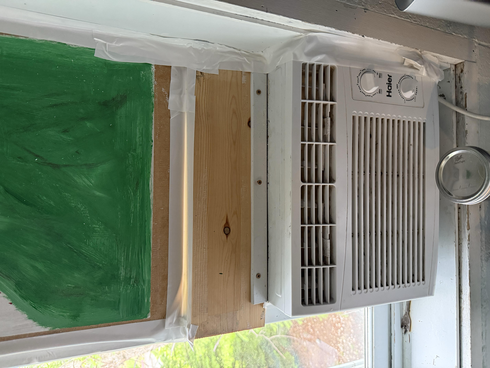
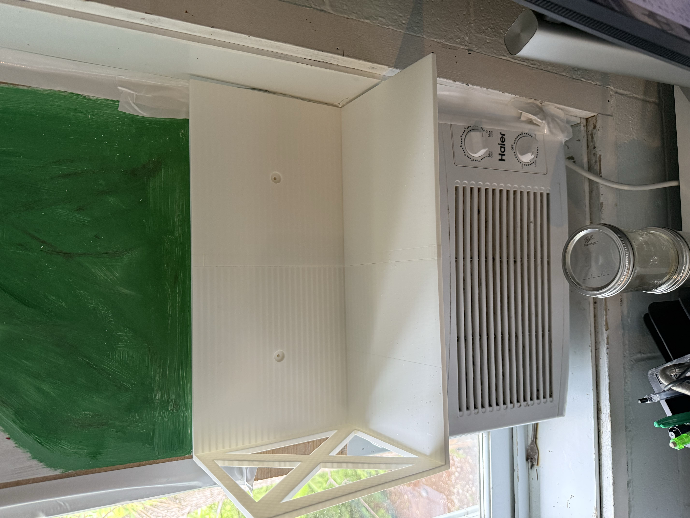
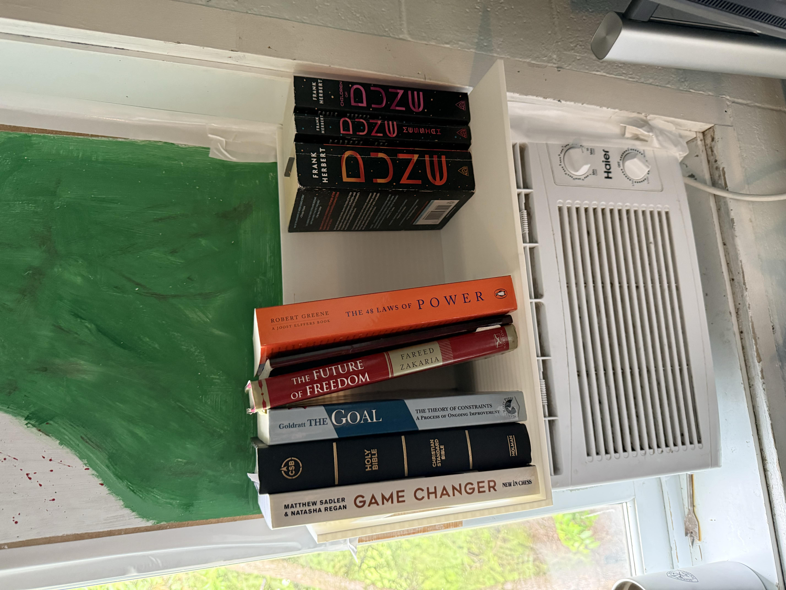

Problem Statement
The AC Bookshelf was designed to solve a practical issue: storing books above an air conditioning unit without obstructing ventilation or creating structural risks as well as filling the deadspace where the wooden plank is currently sat. The structure needed to be compact, sturdy, and capable of supporting uneven weight distribution. This project intially stemmed from the fact I had no good place to store the books I am ready, and wanted to apply my learned CAD skills to a real world problem to find a real world solution, as well as apply the concepts and content I had just learned in FEA, a course I took over the summer of 2025.
Proposed Solution
After measuring available space and clearance, I designed a custom steel bracket and shelf system that mounts around the AC unit, preserving airflow. The structure is fabricated from square tubing and secured at multiple load-bearing points. CAD design was done in SolidWorks.
Final Implementation
The final product was fabricated and installed successfully, holding over 60 lbs of books and gear without deflection. Careful attention was given to spacing and thermal expansion gaps.
FEA Analysis
To validate structural integrity, I performed a finite element analysis in SolidWorks Simulation. The model was constrained at the mounting points and loaded with the expected max weight. Factor of safety (FOS) values were confirmed to be above 8.0, with acceptable displacement and von Mises stress levels for the 3D printed PLA plastic used. One inaccuracy with this model is the interior cross sections, in SWS they are solid, VS in reality they have a non-solid diamond infill, which I have loosely accounted for by doubling the theoretical max load of 20 lbs (acheiving that with books would be difficult). It is presently loaded with around 12 lbs of books, as seen in the Final Implementation, making its present use not prone to mechancial failure.